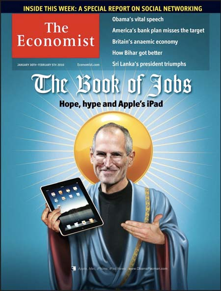

Chương 37

ào năm 2002, Jobs đã nhận được thông báo từ một kỹ sư của Microsoft, người không ngừng giữ vững niềm tin của mình vào phần mềm máy tính bảng do anh ta phát triển khi cho phép những người sử dụng tiếp cận thông tin trên màn hình chỉ với một chiếc bút chấm hoặc bút máy.
Một số nhà sản xuất cho ra đời máy tính bảng năm đó sử dụng phần mềm này, nhưng rốt cuộc chẳng ai gây ra được cơn chấn động nào cả. Jobs đã rất háo hức khi cho thấy đúng ra là nên làm như thế nào - không có chiếc bút châm chấm nào hết! - nhưng khi xem xét công nghệ cảm ứng đa điểm (multi-touch multi- touch(công nghệ cảm ứng đa chạm) mà Apple đang phát triển, ông đã quyết định sử dụng nó trước tiên để tạo nên một chiếc iPhone.
Cùng lúc, ý tưởng về chiếc máy tính bảng đã được thấm nhuần trong bộ phận phần cứng của Macintosh. “Chúng tôi không có kế hoạch tạo ra một chiếc máy tính bảng,” Jobs tuyên bố trong cuộc phỏng vấn với Walt Mossberg vào tháng Năm năm 2003. “Hóa ra là mọi người đều muốn những cái bàn phím. Những chiếc máy tính bảng thu hút những người giàu có với rất nhiều những chiếc máy tính và thiết bị đi kèm.” Như thể bài phát biểu của Steve là về vấn đề “thiếu cân bằng hormone”, đó là một sự hiểu nhầm; trong hầu hết những cuộc họp thường niên của Jobs, máy tính bảng là một trong số những dự án tương lai được thảo luận. “Chúng tôi đã trình bày ý tưởng tại rất nhiều cuộc họp, bởi lẽ Steve chẳng bao giờ mất đi khao khát khát tạo ra một chiếc máy tính bảng,” Phil Schiller nhớ lại.
Dự án máy tính bảng được đẩy mạnh vào năm 2007 khi Jobs cân nhắc các ý tưởng về những chiếc netbook giá thành thấp. Trong lần hội ý của nhóm điều hành vào một ngày thứ Hai, Ive đã hỏi tại sao lại cần đến một bàn phím được nối với màn hình; nó thật đắt đỏ và cồng kềnh.
Hãy đặt chiếc bàn phím này vào màn hình sử dụng giao diện multi- touchcảm ứng đa điểm, anh gợi ý. Jobs tán thành. Do đó mà các nguồn lực đã được huy động để tăng tốc dự án máy tính bảng thay vì thiết kế một chiếc netbook.
Quá trình bắt đầu khi Jobs và Ive tính toán kích cỡ màn hình phù hợp. Họ đã tiến hành 20 mô hình - tất cả đều là hình chữ nhật, tất nhiên - với những kích cỡ và tỷ lệ khác nhau. Ive đặt chúng trên một chiếc bàn trong phòng thiết kế, và vào buổi chiều, họ nâng chiếc khăn trải bàn bằng nhung ở dưới chúng lên và tiến hành đo đạc. “Đó là cách mà chúng tôi đã đo kích cỡ màn hình,” Ive nói.
Như thường lệ, Jobs luôn khuyến khích sự đơn giản thuần túy nhất có thể. Điều đó đòi hỏi phải xác định được đâu là bản chất cốt lõi của thiết bị. Câu trả lời là: màn hình hiển thị. Do vậy, quy tắc chỉ dẫn là tất cả những gì họ làm đều phải hướng đến và chiều theo những yếu tố của màn hình. “Làm cách nào chúng ta có thể sáng tạo, làm mọi thứ khác đi, khi không có hàng tấn những đặc tính và phím bấm có thể làm xao lãng từ màn hình hiển thị?” Ive hỏi. Trong mỗi bước, Jobs đều khuyến khích sự khác biệt và đơn giản.
Jobs nhìn một mô hình và tỏ ra đôi chút không hài lòng. Nó không mang lại cảm giác bình thường và thân thiện, vì thế mà bạn có thể nâng nó lên và lướt nó mau lẹ một cách tự nhiên. Ive đặt ngón tay của mình lên, nhưng vấn đề là: Chúng cần được ra hiệu thì bạn mới có thể tiếp cận được bằng tay nhờ vào lực xung. Phần dưới gờ cần phải được phát triển ở mức độ tương đối, nhờ đó bạn sẽ cảm thấy thoải mái khi chỉ nâng nó lên bình thường thay vì phải nâng nó lên một cách cẩn thận.
Điều đó có nghĩa là các kỹ sư phải thiết kế những cổng kết nối cần thiết và các phím bấm trong một mép đơn giản và đủ mỏng để có thể dễ dàng bỏ qua phần dưới.
Nếu chú ý tới những mạt giũa tinh xảo, bạn có thể thấy dãy số D504889 đã được Apple gắn vào tháng Ba năm 2004 và phát hành vào 14 tháng sau đó. Các nhà sáng chế gồm có Jobs và Ive.
ứng dụng này đã đem đến bản phác thảo về những chiếc máy tính bảng điện tử hình chữ nhật với các gờ bao quanh, xem như theo cách mà iPad được chế tạo, khi một người giữ nó bình thường bằng tay trái trong khi dùng tay phải của mình chạm vào màn hình.
Do những chiếc máy tính Macintosh đang sử dụng các con chip Intel, Jobs bắt đầu lên kế hoạch sử dụng con chip Atom hạ thế (điện áp thấp) mà Intel đang phát triển cho iPad. Paul otellini, CEO của Intel, đã đẩy mạnh hợp tác trong thiết kế, và Jobs đã rất tin tưởng ông ấy. Công ty của Paul đang làm ra những bộ xử lý nhanh nhất trên thế giới. Nhưng Intel đã từng chế tạo ra bộ xử lý cho những chiếc máy tính bàn, chứ không phải là những chiếc máy cần phải chú trọng bảo quản, giữ gìn tuổi thọ pin. Vì thế mà Tony Fadell đã tranh luận rất gay gắt về một vài vấn đề dựa trên kiểu cấu trúc, mà theo ông là đơn giản hơn và sử dụng ít năng lượng hơn. Apple đã từng là một đối tác của ARM, và những con chip sử dụng kiểu cấu trúc này được lắp ráp trong chiếc iPhone nguyên bản. Fadell nhận được nhiều sự ủng hộ từ những kỹ sư khác và chứng minh rằng mình có thể đối chất với Jobs và khiến ông thay đổi ý kiến. “Thật sai lầm, sai lầm, quá sai lầm!” Fadell đã hét lên trong một cuộc họp khi Jobs cứ khăng khăng tốt nhất là nên tin tưởng vào Intel để có thể tạo ra một con chip di động. Fadell thậm chí đã đặt biểu tượng Apple lên trên bàn, đe dọa từ chức.
Cuối cùng thì Jobs cũng dịu lại. “Tôi đang nghe anh đây”, Jobs nói. “Tôi không định chống lại những người giỏi nhất của mình.” Trên thực tế, ông đã đi đến một giới hạn khác. Apple đã đăng ký giấy phép cho cấu trúc ARM, nhưng cũng mua một nhà máy thiết kế bộ vi xử lý 150 người tại Palo Alto, được gọi là P.A. Semi, và tạo nên một tùy chỉnh chip hệ thống (hệ-thống-chip) A4, dựa trên cấu trúc ARM và được Samsung Hàn Quốc sản xuất ở Hàn Quốc bởi Samsung. Jobs nhớ lại: Trong giới hạn hiệu suất cao, Intel là thương hiệu hàng đầu. Họ đã chế tạo được con chip nhanh nhất, nếu bạn không quan tâm đến sức mạnh và giá thành. Nhưng họ chỉ chế tạo cho bộ xử lý trên một con chip, vì thế mà nó sẽ kéo theo rất nhiều phần khác. A4 của chúng tôi có một bộ xử lý và những đồ họa, hệ thống vận hành di động, và bộ nhớ kiểm soát được tất cả mọi con chip.
Chúng tôi đã cố gắng để giúp đỡ Intel, nhưng họ không nghe chúng tôi là mấy. Suốt nhiều năm ròng, chúng tôi đã nói với họ rằng những đồ họa của họ rất chán. Mỗi quý chúng tôi lên lịch một buổi gặp gỡ với tôi cùng ba lãnh đạo hàng đầu và Paul otellini. Ban đầu, chúng tôi đã cùng tạo nên những điều tuyệt vời. Họ muốn dự án hợp tác lớn này có thể chế tạo ra những con chip cho những chiếc iPhone trong tương lai. Có hai lý do mà chúng tôi không thể tiếp tục hợp tác với Intel. Một là họ thực sự rất chậm chạp. Họ giống như một con tàu chạy bằng hơi nước vậy, không mấy linh hoạt. Trong khi chúng tôi lại đang tiến khá nhanh. Hai là chúng tôi không hề muốn phải chỉ dạy cho họ mọi thứ, những thứ mà họ có thể đem đi và bán cho các đối thủ của chúng tôi.
Theo lời otellini, có thể ý nghĩa đối với iPad khi sử dụng những con chip Intel, vấn đề ở đây, ông nói, là Apple và Intel không thể đồng thuận về mức giá. Ngoài ra, họ còn bất đồng ở chuyện ai sẽ kiểm soát việc thiết kế. Đây lại là một ví dụ khác nữa về niềm khao khát của Jobs, quả thực là một khát khao không sao chế ngự được, là điều chỉnh và kiểm soát từng khía cạnh của một sản phẩm, “từ da cho đến thịt”.
Ra mắt sản phẩm, tháng Một năm 2010
Sự kích động thường lệ khi Jobs có khả năng sẽ cho ra mắt sản phẩm được rào trong việc so sánh với sự điên cuồng xây nên cho iPad tiết lộ công khai vào ngày 27 tháng Một, 2010 tại San Francisco. Tờ Economist đã đưa ông lên trang bìa với chiếc áo choàng, vòng hào quang, và phong cho ông là “Chúa Jesus của Máy tính bảng”. Tờ Wall Street Journal cũng lặp lại điều đó bằng bài viết ca ngợi: “Lần cuối cùng có một sự háo hức đến vậy về một chiếc máy tính bảng, kèm theo một vài những lời răn dạy được viết trong đó.” Cũng như để nhấn mạnh bản chất lịch sử của sự ra mắt này, Jobs đã mời đến rất nhiều nhân vật kỳ cựu từ những ngày đầu tiên của Apple. Thật xúc động, James Eason, người tiến hành ca phẫu thuật ghép gan cho Jobs một năm trước và Jeffrey Norton, người đã thực hiện ca phẫu thuật cắt bỏ khối u tuyến tụy cho ông vào năm 2004, cũng có mặt trong hàng ghế khán giả, cùng với đó là vợ và con trai ông, và cả em gái Mona Simpson.

Jobs đã làm nên một việc ưu việt khi đưa một thiết bị mới vào cuộc sống, cũng như cách ông đã làm với iPhone ba năm trước. Lần này ông đã dựng lên một màn hình thể hiện được một chiếc iPhone và laptop với một câu hỏi ghi dấu ở giữa. “Câu hỏi là, có nơi nào cho điều gì đó ở giữa?” ông hỏi. Cái gọi là “điều gì đó” có thể là vẫn truy cập được các trang web, email, ảnh, nhạc, trò chơi, và cả ebook. ông đã từ bỏ trọng tâm của ý tưởng netbook. “Những chiếc netbook chẳng tốt hơn gì cả!” ông nói. Các khách mời và nhân viên vui mừng. “Nhưng chúng tôi có „điều gì đó‟ ở đây. Và chúng tôi gọi nó là iPad.”
Để nhấn mạnh bản chất tự nhiên của iPad, Jobs bước đi nhẹ nhàng đến một bộ bàn ghế da thoải mái (thực sự thì, theo khiếu thẩm mỹ của ông, đó là một chiếc ghế Le Corbusier và một chiếc bàn Eero Saarinen) và nhấc một chiếc iPad lên. “Nó còn thân thiết và gần gũi hơn một chiếc laptop rất nhiều”, ông tán dương. Jobs tiếp tục lướt trang web của New York Times, gửi một email cho Scott Forstall và Phil Schiller (“Wow, chúng tôi thực sự đang giới thiệu về iPad”), lướt ngón tay trên một album ảnh, sử dụng lịch, zoom vào Tháp Eiffel trên Google Maps, xem một vài đoạn phim (Star Trek và Up của hãng Pixar), cho thấy giá sách iBook, và phát một bài hát (“Like a Rolling stone” của Bob Dylan, bài hát mà ông đã chơi tại buổi ra mắt iPhone). “Thật tuyệt vời phải không các bạn?”, Steve hỏi.
Ở slide cuối cùng của mình, Jobs nhấn mạnh một trong những chủ đề quan trọng trong cuộc sống của ông, điều đã được thể hiện bởi iPad: dấu hiệu cho thấy một góc của Technology Street và Liberal Arts Street. “Lý do khiến Apple có thể tạo nên những sản phẩm như iPad đó là chúng tôi luôn luôn cố gắng trở thành giao điểm của công nghệ và nghệ thuật”, ông kết luận. iPad là sự tái sinh số hóa của Whole Earth Catalog(^^\ nơi mà sự sáng tạo được thể hiện trong những công cụ phục vụ cho cuộc sống.
Ngay lập tức, phản ứng ban đầu không phải là khúc Hallelujah Chorus. iPad chưa thực sự có mặt trên thị trường (nó sẽ được bán rộng rãi vào tháng Tư), và một vài người đã xem bản demo của Jobs không mấy chắc chắn về việc iPad thực sự là cái gì. Một chiếc Steroid trên iPhone ư?
“Tôi đã không bị thất vọng như thế kể từ khi Snooki lôi cuốn với chương trình thực tế The Situation,” Daniel Lyons (người đã diễn “Steve Jobs giả” trong một phiên bản hài hước đăng trên mạng) viết. Tờ Gizmodo đã chạy dòng tít bài viết của một cộng tác viên: “Tám điều chán ngắt về iPad” (không đa nhiệm, không camera, không Flash...). Thậm chí cả cái tên iPad cũng trở thành một sự giễu cợt, chế nhạo trên blog, với những lời bình luận quái thai về các sản phẩm vệ sinh phụ nữ và những miếng băng vệ sinh. “Tampon” là chủ đề được trending (đăng tải) nhiều nhất trên mạng xã hội Twitter những ngày đó.
Ngoài ra là sự phản hồi tất yếu từ Bill Gates. “Tôi vẫn nghĩ rằng một vài sự kết hợp của âm thanh, cây bút và bàn phím thực sự nói theo cách khác là chiếc netbook - sẽ trở thành xu thế chủ đạo”, Gates nói với Brent Schlender. “Nó không giống như việc tôi ngồi đây và cảm nhận theo cùng một cách mà tôi thấy với chiếc iPhone khi nói, „ôi Chúa ơi, Microsolf đã không nhắm đến mục tiêu đủ cao.‟ Nó là một bộ đọc tốt, nhưng chẳng có gì ở chiếc iPad khiến tôi trông thấy và rồi nói, „ồ, ước gì Microsoft cũng có thể tạo ra nó.‟” Gates khăng khăng rằng phương pháp tiếp cận của Microsoft là sử dụng một chiếc bút châm cho đầu vào sẽ chiếm ưu thế. “Tôi đã từng dự đoán về tương lai máy tính bảng với chiếc bút châm trong nhiều năm”, ông nói với tôi. “Cuối cùng thì hoặc là tôi đúng hoặc tôi sẽ chết.”
Đêm trước ngày thông báo ra mắt sản phẩm, Jobs đã rất chán nản và bực bội. Khi chúng tôi cùng dùng bữa tối trong phòng bếp nhà ông, ông cứ đi đi lại lại quanh bàn để truy cập hòm mail và lướt web trên chiếc iPhone của mình.
Tôi đã nhận được khoảng 800 tin nhắn qua email trong suốt 24 giờ cuối cùng trước buổi ra mắt. Hầu hết là phàn nàn. Nó không có cổng USB! Nó chẳng có cái này, cũng chẳng có cái kia.
Một trong số đó là, “Mẹ kiếp, làm sao mà ông có thể làm như vậy?” tôi không mấy khi trả lời lại, nhưng lần này thì tôi phản hồi, “Hẳn là bố mẹ cậu sẽ rất tự hào về cách mà cậu trưởng thành.” Và với cả những người mà không thích cái tên iPad nữa, cứ thế cứ thế. Hôm nay tôi thực sự rất thất vọng. Nó khiến bạn cảm thấy có đôi chút nản lòng.
Hôm đó, ông chỉ nhận được đúng một cuộc điện thoại chúc mừng mà ông rất biết ơn, trân trọng, từ tham mưu trưởng của Tổng thống Obama, Rahm Emanuel. Nhưng Jobs nhận ra vào bữa tối rằng Tổng thống đã không gọi cho mình. Luồng dư luận lắng xuống khi iPad được bán vào tháng Tư, mọi người bắt đầu chú ý và đặt mua nó. Cả tờ Time lẫn Newsweek đều đưa nó lên trang bìa. “Điều khó khăn khi viết về những sản phẩm của Apple là có rất nhiều điều thổi phồng và cường điệu xung quanh chúng,” Lev Grossman viết trên tờ Time. “Một khó khăn khác đó là đôi khi sự thổi phồng và cường điệu đó lại đúng.” Sự dè dặt chủ yếu của ông, một điều quan trọng, đó là “đôi khi nó là một thiết bị đáng yêu chi phối nội dung, nhưng lại chẳng thể tạo điều kiện cho sức sáng tạo của mình.” Những chiếc máy tính, đặc biệt là Macintosh, đã trở thành những công cụ cho phép con người có thể làm ra âm nhạc, những đoạn phim, các trang web và blog, và có thể đăng tải chúng khắp thế giới. “iPad đã chuyển tầm quan trọng từ sáng tạo nội dung đến việc đơn thuần bị thu hút và rồi thao tác cũng như điều khiển nó. Nó khiến bạn câm lặng, đưa bạn quay trở về là một người tiêu dùng thụ động của những kiệt tác của con người.” Đây là một lời phê bình mà Jobs luôn ghi nhớ. ông chắc chắn rằng phiên bản tiếp theo của iPad sẽ chú trọng vào những phương thức nhằm tạo điều kiện thuận lợi cho những sáng tạo khéo léo được thực hiện bởi những người sử dụng.
Dòng tít chạy trên trang bìa của Newsweek là “Có điều gì tuyệt vời về iPad? Tất cả!” Daniel Lyons, người đã từng hạ gục nó với lời chỉ trích “Snooki” ở buổi ra mắt, đã thu lại ý kiến của mình. “Ý nghĩ đầu tiên của tôi, khi xem Jobs chạy phiên bản mẫu, đó là nó dường như chẳng có gì đột phá cả,” anh viết. “Nó chỉ là một phiên bản lớn hơn của chiếc iPod Touch mà thôi, phải vậy không? Sau đó tôi có cơ hội sử dụng iPad, và nó thực sự đã chinh phục tôi: Tôi muốn có một chiếc.” Lyons, cũng như những người khác, đã nhận ra rằng đây là dự án yêu thích của Jobs, và nó thể hiện tất cả mọi điều mà ông trông chờ, khao khát, “ông ấy có một khả năng phi thường khi tạo nên các thiết bị mà chúng ta đã không hề biết là mình cần, nhưng rồi bỗng nhiên lại không thể nào sống thiếu chúng được”, anh viết. “Một hệ thống đóng có thể là cách duy nhất để mang đến dạng thức này của kinh nghiệm techno-Zen mà Apple trở nên nổi tiếng vì đó.” Một trong những cuộc tranh luận về iPad tập trung vào vấn đề rằng liệu sự tích hợp đóng end-to-end (cuối-đến-cuối) của nó có thực sự thông minh, tuyệt vời hay rồi phải gánh chịu số phận bi đát. Google đã bắt đầu đóng vai giống với vai diễn của Microsoft trong thập niên 1980, đưa ra một nền tảng di động, Android, mở rộng và có thể sử dụng bởi tất cả những người làm phần cứng.
Fortune khơi dậy một cuộc tranh luận về vấn đề này trong những trang viết của mình. “Chẳng có gì để bào chữa về hệ thống đóng cả”, Michael Copeland viết. Nhưng đồng nghiệp của anh, Jon Fortt bác bỏ: “Các hệ thống đóng đã phải gánh chịu những lời chỉ trích thậm tệ, nhưng thực tế chúng đã vận hành tốt và tạo nên những ích lợi cho người sử dụng. Chắc hẳn chẳng có ai làm công nghệ chứng minh được điều này một cách thuyết phục và lôi cuốn hơn Steve Jobs.
Bằng cách bó buộc phần cứng, phần mềm cũng như các dịch vụ và kiểm soát nó một cách chặt chẽ, Apple nhất định có thể đạt được một bước nhảy vọt so với đối thủ của mình và tạo ra những sản phẩm vô cùng tinh tế.” Họ đồng ý rằng iPad có thể là sự thử nghiệm thông minh nhất cho câu hỏi này kể từ chiếc Macintosh nguyên bản. “Apple đã mang đại diện control-freak(^®) của nó đến một cấp độ hoàn toàn mới với con chip A4 đầy sức mạnh,” Fortt viết. “Cupertino hiện giờ có quyết định tuyệt đối về Silicon, thiết bị, vận hành hệ thống, App store (Cửa hàng ứng dụng), và hệ thống thanh toán.”
Jobs đã ghé cửa hàng Apple tại Palo Alto một lát trước buổi chiều ngày 5 tháng Tư, ngày mà iPad sẽ bắt đầu được bán rộng rãi. Daniel Kottke - người bạn tâm giao từ thủa còn theo học trường Reed và những ngày đầu ở Apple, đã không còn nung nấu mối hận vì không được tham gia cổ phần - cũng có mặt ở đó. “Đã mười lăm năm rồi và tối muốn gặp lại cậu ấy,” Kottke thuật lại chi tiết. “Tôi đã bắt tay Steve và nói rằng tôi đã sử dụng iPad cho những lời bài hát của mình. Tâm trạng Steve rất tốt và chúng tôi đã có một cuộc trò chuyện vui vẻ sau từng đó năm.” Powell và đứa con út của ông, Eve, quan sát từ góc cửa hàng.
Wozniak, người đã từng là một nhân tố trong quá trình chế tạo phần cứng và phần mềm mở hết sức có thể, tiếp tục xem xét lại ý kiến đó. Như thường lệ, ông đã thức suốt đêm với những người đầy nhiệt tình đang xếp hàng chờ cửa hàng mở cửa. Lần này ông đang ở Valley Fair Mall của San Jose, và lái một chiếc xe cá nhân Segway. Một phóng viên hỏi ông về bản chất đóng của hệ sinh thái Apple, “Apple đưa bạn vào một chiếc xe đẩy và giữ bạn ở đó, nhưng vẫn có những lợi ích đối với việc đó,” ông đáp. “Tôi thích những hệ thống mở, nhưng tôi là một hacker. Tuy nhiên hầu hết mọi người đều muốn những thứ dễ sử dụng. Mặt thiên tài của Steve là ông biết được làm thế nào khiến cho mọi thứ trở nên đơn giản, vằ đôi khi yêu cầu kiểm soát được tất cả mọi thứ.” Câu hỏi “Có điều gì trên chiếc iPad của bạn?” đã thay thế cho “Có điều gì trong chiếc iPod của bạn?” Ngay cả những thành viên trong đội ngũ của Tổng thống Obama, những người ôm theo chiếc iPad như là một thương hiệu công nghệ tân thời, cũng chơi trò chơi. Cố vấn kinh tế Larry Summers có được những thông tin tài chính từ Bloomberg, Scrabble và The Federalist Papers.
Tham mưu trưởng Rahm Emanuel thì đọc một số lượng lớn báo chí; cố vấn Truyền thông Bill Burton đọc tờ Vanity Fair và xem một mùa trọn vẹn của serie truyền hình Lost; còn Phụ trách Chính trị David Axelrod thì theo dõi Giải Bóng rổ Nhà nghề và Đài Phát thanh Quốc gia.
Jobs đã gửi cho tôi một câu chuyện khiến ông bị kích thích của Michael Noer đăng trên trang Forbes.com. Trong khi Noer đang đọc một tiểu thuyết khoa học hư cấu trên chiếc iPad của mình tại một nông trại vùng thôn dã ở Bogota, Colombia, một bé trai 6 tuổi lau dọn chuồng ngựa nghèo khổ bước đến chỗ ông. Hết sức tò mò, Noer đã đưa cho cậu bé thiết bị này. Không cần một lời chỉ dẫn, và dù chưa từng nhìn thấy một chiếc máy tính nào trước đây, cậu bé đã sử dụng nó hoàn toàn theo trực giác,” Noer viết. “Nếu đó không phải là điều kỳ diệu, thì tôi chẳng biết nó là cái gì nữa.” Trong vòng chưa đến một tháng, các cửa hàng Apple đã bán được một triệu chiếc iPad, nhanh gấp hai lần khi iPhone đạt được mốc này. Tháng Ba năm 2011, chín tháng sau khi ra mắt, 15 triệu chiếc đã được bán. ở một chừng mực nào đó, nó trở thành sản phẩm tiêu dùng thành công nhất trong lịch sử.
Quảng cáo
Jobs đã không hề vui mừng với những quảng cáo đầu tiên của iPad. Như thường lệ, ông lao mình vào tiếp thị quảng bá, làm việc với James Vincent và Duncan Milner ở một hãng quảng cáo (bây giờ được gọi là TBWA/Media Arts Lab), và với Lee Clow tư vấn từ xa. Đoạn phim quảng cáo được thực hiện đầu tiên đặt trong một khung cảnh thanh tao, trang nhã, một chàng trai trong chiếc quần jean bạc màu và áo nỉ nằm tựa đầu trên một chiếc ghế, nhìn vào chiếc laptop của mình. Cả đoạn quảng cáo không có một câu thoại nào, chỉ có nhạc nền là bài “There Goes My Love” của Blue Van. “Sau khi chấp thuận đoạn phim quảng cáo này, Steve quyết định rằng mình ghét nó”, Vincent nhớ lại. “ông ấy cho rằng nó trông giống như một quảng cáo của Pottery Barn vậy.” Sau đó, Jobs nói lại với tôi:
Rất đơn giản để giải thích iPod là gì - hàng nghìn bài hát nằm trong chiếc túi của bạn - có thể cho phép chúng ta nhanh chóng chuyển đến những quảng cáo với hình bóng có tính biểu tượng.
Nhưng thật sự rất khó để giải thích được iPad là gì. Chúng ta không muốn thể hiện nó như một chiếc máy tính, cũng không muốn làm cho nó trở nên nhẹ nhàng giống một chiếc ti vi đáng yêu.
Đoạn phim quảng cáo đầu tiên đã thể hiện rằng ngay cả chính chúng ta cũng không biết là mình đang làm gì. Họ có một chiếc khăn len và đôi giày Hush Puppies để cảm nhận chúng.
James Vincent đã không hề nghỉ ngơi trong nhiều tháng. Vì thế, khi cuối cùng thì iPad cũng được bán và đoạn phim quảng cáo được phát sóng, Vincent đã đưa gia đình mình đến Lễ hội âm nhạc Coachella ở Palm Springs, nơi quy tụ một vài ban nhạc ưa thích của anh như Muse, Faith No More, và Devo. Ngay khi anh tới đó, Jobs đã gọi điện đến. “Quảng cáo của cậu tệ quá!”, Jobs nói. “iPad đã cách mạng hóa cả thế giới và chúng ta cần điều gì đó thật lớn lao. Cậu đã đưa cho tôi cả đống cứt!”
“Được rồi, vậy anh muốn gì?” Vincent hỏi lại. “Anh không thể nói với tôi là anh muốn cái gì.” “Tôi không biết”, Jobs nói. “Cậu phải mang đến cho tôi điều gì đó mới mẻ. Cậu đã chẳng cho tôi thấy điều gì cả!”
Vincent cãi lại và bỗng nhiên Jobs trở nên gay găt. “ông ấy bắt đầu hét vào mặt tôi,” Vincent nhớ lại. Vincent không thay đổi, và tình hình leo thang.
Khi Vincent hét lên, “Anh phải nói cho tôi biết là anh muốn cái gì chứ?” thì Jobs đáp lại: “Cậu phải cho tôi thấy một vài thứ, và tôi sẽ biết đó là gì khi trông thấy.” “ồ tuyệt, hãy để tôi viết ngắn gọn điều đó cho những nhân viên sáng tạo của mình: Tôi sẽ biết nó khi nhìn thấy nó.” Vincent thất vọng đến nỗi đã đấm mạnh tay vào tường căn nhà mà anh đang thuê và tạo nên một vết nứt lớn trên đó. Cuối cùng anh cũng ra ngoài với gia đình mình, ngồi cạnh bể bơi, và họ nhìn anh đầy lo lắng. “Anh ổn chứ?”, vợ Vincent hỏi.
Vincent và nhóm của anh đã mất hai tuần để nghĩ và sắp xếp một ý tưởng mới, anh đã đề nghị giới thiệu chúng tại nhà của Jobs thay vì tại công ty, với hy vọng rằng nơi đó sẽ có một môi trường dễ chịu hơn. Đặt các tấm bảng trên bàn uống cà phê, Vincent và Milner đã đưa ra 12 cách thức cả thảy. Một trong số đó đầy cảm hứng và kích thích. Một bản khác thì hài hước, khi Michael Cera, một diễn viên hài kịch, lang thang trong một căn nhà giả và đưa ra những lời bình luận vui vẻ, hài hước về những cách thức mà mọi người có thể sử dụng iPad. Những phương án khác kết hợp iPad với những nhân vật nổi tiếng, hoặc là đặt hoàn toàn nó trong một nền màu trắng, hoặc diễn xuất trong một tiểu phẩm hài nhỏ, hoặc là thuyết minh sản phẩm một cách thẳng thắn, chân thực.
Sau khi xem xét các lựa chọn, Jobs đã nhận ra mình thực sự muốn gì. Không hài hước, cũng chẳng có người nổi tiếng nào, mà cũng không phải là giới thiệu về sản phẩm. “Phải đưa ra một tuyên bố,” ông nói.
Jobs trên sân khấu giới thiệu Ipad
“Nó cần phải là một bản tuyên ngôn. Nó phải lớn lao.” Jobs đã tuyên bố rằng iPad sẽ thay đổi cả thế giới, và ông muốn một chiến dịch củng cố cho tuyên bố đó. Các công ty khác sẽ sao chép những chiếc máy tính bảng này chỉ trong vòng một năm hoặc hơn, ông nói, và Jobs muốn mọi người phải nhớ rằng iPad mới là điều thực sự. “Chúng ta muốn những đoạn quảng cáo phải đại diện và tuyên bố cho những gì chúng ta đã làm được.”
Jobs đột nhiên trở lại chiếc ghế của mình, trông ông có hơi mệt mỏi nhưng vẫn tươi cười.
“Bây giờ chúng ta phải đưa ra một thông điệp”, ông nói. “Hãy bắt tay vào làm việc đi.” Rồi Vincent và Milner, cùng với người viết kịch bản quảng cáo Eric Grunbaum, bắt đầu tạo nên những gì mà họ đặt cho “Bản tuyên ngôn” (Manifesto). Nó sẽ là một không gian tốc độ nhanh, với những bức tranh gây ấn tượng sâu sắc và những nhịp điệu vang vọng, và nó phải tuyên bố rằng iPad chính là một cuộc cách mạng. Âm nhạc họ lựa chọn là giọng hát của Karen o với bài hát “Gold Lion” của nhóm Yeah Yeah Yeahs. Như những điều kỳ diệu mà iPad đã mang đến, một giọng nói mạnh mẽ sẽ tuyên bố, “iPad rất mỏng. iPad rất đẹp... Nó là sức mạnh điên cuồng. Nó là phép màu... Đó là những đoạn phim, những bức ảnh. Nhiều hơn những cuốn sách bạn có thể đọc được trong suốt cuộc đời của mình. Nó thực sự là một cuộc cách mạng, và nó mới chỉ vừa bắt đầu.” Một khi đoạn quảng cáo “Manifesto” bắt đầu trình chiếu, nhóm lại thử điều gì đó mềm mại, dễ chịu hơn, như là những ghi chép về một ngày trong cuộc sống của nhà làm phim trẻ Jessica Sanders. Jobs thích chúng - trong một khoảnh khắc ngắn ngủi. Sau đó ông quay sang chống lại chúng với cùng một lý do đã đưa ra cho quảng cáo đầu tiên theo phong cách Pottery Barn. “Chết tiệt!”, ông hét lên, “chúng trông giống như một quảng cáo Visa, một kiểu điển hình của các hãng quảng cáo.”
Ông đã luôn đòi hỏi những quảng cáo khác biệt và mới mẻ, nhưng cuối cùng Jobs nhận ra rằng mình không muốn phân tán từ những gì mà ông suy nghĩ về tiếng nói của Apple. Đối với ông, tiếng nói này phải có sự khác biệt của chất lượng: đơn giản, có tính tuyên bố, rõ ràng. “Chúng tôi đã bước theo cách đó, và nó dường như cứ lớn dần lên trong Steve, rồi bất chợt ông nói, Tôi ghét điều đó, nó không phải là Apple,‟” Lee Clow nhắc lại. “ông nói với chúng tôi là hãy quay lại với tiếng nói của Apple. Nó là một giọng nói rất đơn giản và chân thực.” Và rồi họ đã trở lại ý tưởng về một nền màu trắng rõ ràng, sáng sủa, với một cách tiếp cận gần gũi tất cả những điều rằng “iPad là...”.
Các ứng dụng
Các quảng cáo iPad không phải là về các thiết bị, mà là về những gì bạn có thể làm với chúng. Thực sự thì thành công của nó đến không chỉ bởi cái hay của phần cứng mà còn vì cả những ứng dụng nữa (viết tắt là apps), nó cho phép bạn thỏa thích với tất cả những hoạt động thú vị. Có đến hàng nghìn - và sẽ sớm là hàng trăm nghìn - những ứng dụng mà bạn có thể tải về miễn phí hoặc chỉ mất một vài đô-la. Bạn có thể bắn những con chim dữ với một cú đánh mạnh bằng những ngón tay của mình, theo dõi cổ phiếu của bạn, xem các bộ phim, đọc sách báo và tạp chí, nắm bắt những tin tức mới nhất, chơi trò chơi, và tận hưởng những khoảng thời gian tuyệt vời. Một lần nữa, sự tích hợp của phần cứng, phần mềm, và bộ dự trữ trong máy đã làm cho nó trở nên thật dễ dàng, đơn giản. Nhưng những ứng dụng này cũng cho phép nền tảng mở, theo một cách thức được kiểm soát, đối với những nhà phát triển bên ngoài muốn tạo ra một phần mềm và nội dung cho nó - tính mở, đó là, giống như một khu vườn cộng đồng có cổng và được giám sát một cách cẩn thận.
Các ứng dụng phi thường bắt đầu với chiếc iPhone. Lần đầu tiên ra mắt vào năm 2007, nó không có các ứng dụng mà bạn có thể mua từ những nhà phát triển bên ngoài, và ban đầu Jobs đã chống lại việc cho phép họ. Ông đã không muốn những người bên ngoài tạo ra các ứng dụng dành cho iPhone có thể gây ra những rắc rối, lây lan vi rút cho máy, hoặc làm hư hại và ảnh hưởng đến sự toàn vẹn của nó.
Thành viên ban giám đốc Art Levinson là một trong những người thúc đẩy các ứng dụng của iPhone. “Tôi đã gọi cho ông ấy tới nửa tá cuộc điện thoại để vận động cho tiềm năng của các ứng dụng,” ông nhớ lại. Nếu Apple không cho phép và thực sự khuyến khích chúng, một nhà sản xuất điện thoại thông minh khác sẽ bắt đầu tiến hành việc này, và mang đến cho bản thân nó một lợi thế cạnh tranh. Giám đốc tiếp thị Phil Schiller đồng ý với điều này. “Tôi đã không thể tưởng tượng được rằng chúng tôi có thể làm ra được một thứ gì đó đầy sức mạnh như iPhone và không cho phép những nhà phát triển có thể tạo nên được nhiều những ứng dụng”, ông nói. “Tôi biết là các khách hàng sẽ yêu thích chúng.” Nhà đầu tư mạo hiểm John Doerr tranh luận rằng việc cho phép những ứng dụng sẽ sản sinh ra vô khối những doanh nhân mới, những người sẽ tạo ra những dịch vụ mới.
Ban đầu, Jobs chấm dứt cuộc thảo luận, một phần vì ông đã cảm thấy nhóm của mình không thể đoán định, lường hết được những sự phức tạp liên quan đến chính trị của bên thứ ba phát triển các ứng dụng. Ông muốn tiêu điểm. “Vì thế mà Jobs không muốn nói chuyện về nó nữa,” Schiller nói. Nhưng ngay khi iPhone ra mắt, Jobs lại sẵn lòng lắng nghe cuộc tranh luận. “Mỗi lần đối thoại, Steve dường như đã cởi mở hơn đôi chút,” Levinson nói. Đã có những cuộc thảo luận tự do và sôi nổi tại bốn cuộc họp ban lãnh đạo.
Jobs đã sớm nhận ra rằng có một cách để có được những gì tốt đẹp nhất của cả hai thế giới.
Ông cho phép những người bên ngoài có thể viết các ứng dụng, nhưng họ sẽ phải tuân thủ những tiêu chuẩn chặt chẽ, đã được thử nghiệm, kiểm tra và thông qua bởi Apple, và chỉ được bán qua iTunes store. Đó là một cách để thu được lợi thế từ việc cho phép hàng nghìn nhà phát triển phần mềm trong khi vẫn giữ lại sự kiểm soát đủ để bảo vệ cho sự toàn vẹn của iPhone và sự đơn giản của những trải nghiệm khách hàng. “Đó hoàn toàn là một giải pháp tuyệt vời để có thể thỏa mãn được nhu cầu”, Levinson chia sẻ. “Nó mang đến cho chúng tôi những nguồn lợi của tính mở trong khi vẫn duy trì sự kiểm soát đóng.”
Cửa hàng ứng dụng dành cho iPhone đã được mở trên iTunes vào tháng Bảy năm 2008; lượt tải về thứ một tỷ là vào 9 tháng sau đó. Thời điểm iPad được bày bán rộng rãi vào tháng Tư năm 2010, đã có tới 185.000 ứng dụng cho iPhone. Hầu hết chúng cũng có thể được sử dụng trên iPad, măc dù họ đã không tận dụng được lợi thế của một kích cỡ màn hình lớn hơn. Nhưng chỉ trong vòng chưa đến năm tháng, những người phát triển đã viết tới 25.000 ứng dụng mới đặc biệt dành cho iPad. Tháng Bảy năm 2011, đã có tới 500.000 ứng dụng dành cho cả hai thiết bị này, và có hơn 15 tỷ lượt tải vê.
Cửa hàng ứng dụng đã tạo nên một ngành công nghiệp trong chốc lát. Trong những căn phòng, gara ô tô và những công ty truyền thông lớn, các doanh nhân đã tạo ra những ứng dụng mới. Công ty đầu tư mạo hiểm của John Doerr đã tạo ra một iFund với 200 triệu đô-la để cấp vốn cho những ý tưởng tốt nhất. Các báo và tạp chí vốn không cho phép đọc miễn phí đã trông thấy một cơ hội cuối cùng để nhốt vị thần của mô hình kinh doanh còn nhiều hồ nghi và chưa rõ ràng này vào trong chai. Những nhà xuất bản tân tiến đã tạo nên những tờ tạp chí mới, những cuốn sách mới, những tài liệu học tập chỉ dành cho iPad. Ví dụ, Nhà xuất bản Callaway, nơi đã xuất bản những cuốn sách từ Madonna‟s Sex cho đến Miss Spider‟s Tea Party, đã quyết định “qua sông đốt thuyền” khi từ bỏ việc in ấn thuần túy, để tập trung vào xuất bản những cuốn sách với tư cách là các ứng dụng tương tác. Tháng Sáu năm 2011, Apple đã chi trả 2,5 tỷ đô-la cho những người phát triển các ứng dụng.
iPad và những thiết bị kỹ thuật số dựa trên nền tảng ứng dụng đã báo trước một thay đổi cơ bản trong thế giới kỹ thuật số. Quay lại thập niên 1980, lên mạng thường có nghĩa là liên lạc với một dịch vụ như AOL, CompuServe, hay Prodigy những nơi thu phí cho việc truy cập vào một khu vườn được giám sát cẩn thận được bao bọc bởi diện tích bề mặt cùng với những chiếc cổng thoát hiểm, cho phép những người sử dụng can đảm có thể tiếp cận với Internet ở phạm vi rộng. Giai đoạn thứ hai bắt đầu từ đầu những năm 1990, là sự xuất hiện của những trình duyệt cho phép mọi người có thể tự do truy cập vào Internet, sử dụng Giao thức truyền tải siêu văn bản của World Wide Web, dẫn đến hàng tỷ trang web khác nhau. Các công cụ tìm kiếm xuất hiện giúp mọi người có thể dễ dàng tìm kiếm những trang web mà họ muốn. Sự ra đời của iPad đã báo hiệu một hình mẫu mới. Các ứng dụng có sự tương đồng với những khu vườn có tường bao quanh ngày xưa.
Những người sáng tạo có thể áp phí và đưa ra nhiều chức năng dành cho người sử dụng để tải chúng về. Nhưng sự phát triển của các ứng dụng cũng có ý nghĩa rằng tính mở và bản chất kết nối của web đã “hy sinh”. Các ứng dụng không dễ dàng được tìm kiếm hoặc kết nối. Bởi lẽ iPad cho phép quyền sử dụng các ứng dụng lẫn các trình duyệt web, và đó không phải là ở cuộc chiến với các mô hình web. Nhưng nó đã cung cấp một sự thay thế, cho cả người tiêu dùng lẫn những người sáng tạo nội dung.
Báo chí và Xuất bản
Với chiếc iPod, Jobs đã chuyển sang công việc kinh doanh âm nhạc. Với iPad và Cửa hàng ứng dụng của nó, ông đã bắt đầu tiến đến tất cả mọi phương tiện truyền thông, từ xuất bản cho đến báo chí, cho tới truyền hình và điện ảnh.
Sách là một mục tiêu rõ ràng, khi Kindle của Amazon đã thể hiện sự khao khát đối với những cuốn sách điện tử. Vì vậy, Apple đã tạo nên iBook store, nơi bán những cuốn sách điện tử theo cách thức mà iTunes Store đã bán những bài hát. Mặc dù vậy, vẫn có một sự khác biệt nho nhỏ trong mô hình kinh doanh này. Đối với iTunes store, Jobs khăng khăng rằng tất cả các bài hát đã được bán với một cái giá không hề đắt, chỉ có 99 cent lúc ban đầu. Jeff Bezos của Amazon đã cố gắng thực hiện phương pháp tương tự với những cuốn sách điện tử, bán chúng hầu hết với giá 9,99 đô-la. Jobs đã đưa ra cho các nhà xuất bản điều mà ông đã từ chối các hãng đĩa: Họ có thể đặt bất cứ cái giá nào họ muốn cho những hàng hóa của mình tại iBook store, và Apple sẽ nhận được 30%.
Ban đầu thì điều đó đồng nghĩa với những mức giá cao hơn so với Amazon. Nhưng tại sao mọi người vẫn đặt mua ở Apple nhiều hơn? “Đó không phải là trường hợp này,” Jobs trả lời, khi Walt Mossberg đặt cho ông câu hỏi đó tại sự kiện ra mắt iPad. “Cái giá thực ra là như nhau.” Và ông đã đúng.
Một ngày sau khi iPad ra mắt, Jobs đã chia sẻ với tôi suy nghĩ của ông về những cuốn sách: Amazon đã thật sai lầm. Amazon trả giá bán buôn cho một số cuốn sách, rồi bắt đầu bán lại với giá thấp hơn 9,99 đô-la. Các nhà xuất bản ghét điều này - họ nghĩ rằng nó có thể làm mất đi khả năng bán những cuốn sách bìa cứng của họ với giá 28 đô-la. Vì thế thậm chí trước cả khi Apple bước vào tình huống này, một vài nhà cung cấp sách đã bắt đầu từ chối bán sách trên Amazon. Do đó chúng tôi đã nói với các nhà xuất bản, “Chúng tôi sẽ đến với mô hình môi giới trung gian, nơi các bạn đặt ra một mức giá còn chúng tôi sẽ thu về 30%, đúng là khách hàng sẽ phải trả thêm một chút, nhưng dù sao đó cũng chính là những gì các bạn muốn.” Nhưng chúng tôi cũng yêu cầu một sự bảo đảm rằng nếu có bất cứ ai khác đang bán những cuốn sách rẻ hơn chúng tôi, thì chúng tôi cũng có thể bán chúng với mức giá thấp hơn. Vì thế mà họ đã đến Amazon và nói, “Các anh hãy ký hợp đồng với một hãng hoặc chúng tôi sẽ không cung cấp sách cho các anh nữa.” Jobs nhận thức được rằng mình đang cố gắng “lợi cả đôi đường” khi đến với âm nhạc và sách báo. ông đã từng từ chối cung cấp cho các công ty âm nhạc một mô hình trung gian môi giới và không cho phép họ đặt ra những mức giá của riêng mình. Tại sao? Bởi vì ông không phải làm vậy. Nhưng với sách thì ông đã làm thế. “Chúng tôi không phải là những người đầu tiên trong việc kinh doanh sách”, ông nói. “Trong bối cảnh như thế này, điều tốt nhất đối với chúng tôi là thực hiện bước akido và kết thúc với mô hình trung gian môi giới. Và chúng tôi đã tiến hành mặc cho những khó khăn và trở ngại.”
Ngay sau khi diễn ra sự kiện ra mắt iPad, Jobs đã đến New York vào tháng Hai năm 2002 để gặp gỡ những nhà điều hành trong lĩnh vực kinh doanh báo chí. Trong hai ngày, Jobs đã gặp gỡ Rupert Murdoch, con trai ông là James, và nhà quản lý của tờ Wall Street Journal của họ: Arthur Sulzberger Jr. và những nhà điều hành hàng đầu của tờ New York Times', cũng như các nhà điều hành tờ Time, Fortune, và những tờ tạp chí khác của Time Inc.. “Tôi muốn mời những tờ báo có chất lượng,” ông nói. “Chúng tôi không thể phụ thuộc vào các blogger để có được những tin tức mới. Chúng tôi cần đến những phóng viên và biên tập viên thực sự hơn bao giờ hết. Do đó tôi muốn tìm cách giúp mọi người tạo nên những sản phẩm số mà họ thực sự có thể kiếm ra tiền từ đó.” Vì thế ông đã làm cho mọi người phải trả tiền cho âm nhạc và ông hy vọng mình cũng có thể làm vậy đối với báo chí.
Mặc dù vậy, các nhà xuất bản đã trở nên thận trọng và dè dặt đối với “dây cứu sinh” của Jobs. Điều đó có nghĩa là họ phải trả 30% doanh thu cho Apple, nhưng đó không phải là vấn đề lớn nhất. Quan trọng hơn, những nhà xuất bản lo ngại rằng, dưới hệ thống của Jobs, họ không còn duy trì được mối quan hệ trực tiếp với những người đăng ký của mình nữa; họ sẽ không có địa chỉ email và số thẻ tín dụng để có thể tính hóa đơn cho khách hàng, giao tiếp và liên lạc với họ, tiếp thị quảng bá đến họ những sản phẩm mới nhất. Thay vào đó, Apple sẽ có các khách hàng, tính hóa đơn và thu được những thông tin của họ trên hệ thống dữ liệu của riêng mình. Và do chính sách bảo mật của mình, Apple sẽ không chia sẻ những thông tin đó trừ khi khách hàng cho phép họ làm vậy.
Jobs đặc biệt quan tâm đến New York Times, theo ông đó là một tờ báo lớn có nguy cơ xuống dốc bởi lẽ nó không tìm cách để đáp ứng nội dung số. “Tôi đã quyết định rằng một trong những dự án trực tiếp của mình trong năm nay là sẽ cố gắng để mời - dù họ có muốn hay không - tờ The Times", ông nói với tôi vào đầu năm 2010.
Trong suốt chuyến viếng thăm New York, Jobs đã dùng bữa tối với 50 nhà điều hành hàng đầu của tờ The Times trong một phòng ăn tối riêng tư ở Pranna, một nhà hàng châu Á. (Ông đã gọi sinh tố xoài và mì ống chay, cả hai món đều không có trong thực đơn.) Tại đây, ông đã lấy chiếc iPad ra và giải thích tầm quan trọng của việc đưa ra một mức giá khiêm tốn nhất cho những nội dung số mà các khách hàng có thể chấp nhận.
Ông vẽ ra một đồ thị về số lượng độc giả và những mức giá khả thi. Sẽ có bao nhiêu độc giả tìm đọc nếu tờ The Times miễn phí? Họ sẽ biết câu trả lời cho đến điểm tận cùng của đò thị, bởi lẽ họ đang cung cấp nội dung miễn phí trên trang web và có khoảng 20 triệu lượt ghé thăm thường xuyên. Và nếu đưa ra một mức giá thực sự đắt đỏ? Họ cũng có dữ liệu ở trên đó; thu của những người đăng ký báo giấy hơn 300 đô-la một năm và có được khoảng 1 triệu độc giả. “Các anh hãy đến với điểm giữa, nơi có khoảng 10 triệu người đăng ký số”, Steve nói với họ. “Và điều đó có nghĩa là những tài khoản đăng ký số của các anh nên thật rẻ và dễ dàng, chỉ một cái nhấp chuột và nhiều nhất là 5 đô-la mỗi tháng.”
Khi một trong các nhà điều hành của The Times quả quyết rằng tờ báo cần thông tin về email và thẻ tín dụng của tất cả những người đăng ký, ngay cả khi họ đăng ký thông qua Cửa hàng ứng dụng, Jobs nói rằng Apple không thể cung cấp những dữ liệu đó được. Điều đó khiến nhà điều hành trên tức giận. “Được thôi, anh có thể hỏi khách hàng điều này, nhưng nếu họ không tình nguyện cung cấp cho anh, thì đừng có trách tôi”, Jobs nói. “Nếu anh không thích thì đừng sử dụng chúng tôi nữa. Tôi không phải là người đặt anh vào tình thế này. Anh là một trong số những người đã phải dành 5 năm qua để cung cấp miễn phí tờ báo điện tử của mình và rồi chẳng thu được thông tin thẻ tín dụng của bất cứ ai.”
Jobs cũng đã gặp riêng Arthur Sulzberger Jr. “Arthur là một người rất tốt bụng, và anh ấy thực sự rất tự hào về công trình mới của mình, như là anh ấy nên thế”, Jobs nói. “Tôi đã nói chuyện với Arthur về điều mà theo tôi là anh ấy nên làm, nhưng rồi chẳng có chuyện gì xảy ra cả.” Nó mất tới một năm, và vào tháng Tư năm 2008, tờ The Times bắt đầu ra mắt ấn bản kỹ thuật số và bán cho một vài tài khoản đăng ký thông qua Apple, không thay đổi những chính sách mà Jobs đã thiết lập.
Tuy nhiên, tờ báo quyết định thu ước chừng bốn lần 5 đô-la phí hàng tháng mà Jobs từng gợi ý.
Tòa nhà Time-Life do chủ bút của Time là Rick Stengel làm chủ. Jobs quý mến Stengel, người đã chuyển một nhóm tài năng do Josh Quitter lãnh đạo, để tạo nên phiên bản iPad dành cho tạp chí từng tuần. Nhưng ông đã rất thất vọng khi trông thấy Andy Serwer của Fortune ở đó. Đầy gay gắt và dữ dội, Jobs nói với Serwer việc ông đã tức giận như thế nào về câu chuyện đăng trên Fortune hai năm về trước, tiết lộ chi tiết tình trạng sức khỏe của ông và gây ra những vấn đề về cổ phiếu. “Các anh đã đá cho tôi một cú khi tôi ngã”, ông nói.
Vấn đề lớn hơn ở Time Inc. cũng là vấn đề ở The Times: Tờ tạp chí này không muốn Apple sở hữu những người đăng ký của nó và ngăn nó trực tiếp thu hóa đơn. Time Inc. đã muốn tạo nên những ứng dụng có thể dẫn trực tiếp độc giả đến với trang web của nó để đăng ký đặt báo. Apple đã từ chối. Khi Time và những tờ tạp chí khác cho phép các ứng dụng có thể làm được điều này, họ đã từ chối quyền trong Cửa hàng ứng dụng.
Jobs cố gắng thương lượng cá nhân với CEO của Time Warner, Jeff Bewker, một người theo chủ nghĩa thực dụng đầy hiểu biết với sức hút mạnh mẽ đối với ông. Họ đã thỏa thuận với nhau một vài năm trước về đoạn video được đăng ký dành cho iPod Touch; thậm chí Jobs cũng không thể thuyết phục ông tiến hành một thỏa thuận liên quan đến việc HBO độc quyền phát sóng những bộ phim ngay sau khi công chiếu, và ông ngưỡng mộ sự thẳng thắn và phong cách quyết đoán của Bewkes. về phần mình, Bewkes cũng tôn trọng khả năng của Jobs khi vừa là người suy nghĩ có chiến lược lại vừa là bậc thầy của những chi tiết nhỏ nhặt nhất. “Steve có thể sẵn sàng đi từ những nguyên tắc bao quát cho tới những chi tiết cụ thể” ông nói.
Khi Jobs gọi cho Bewkes để tiến hành một thỏa thuận về việc để những tờ tạp chí Time Inc. xuất hiện trên iPad, ông bắt đầu cảnh báo rằng ngành in ấn “thật tồi tệ”, và rằng “mọi người thực sự muốn những tờ tạp chí của anh”, và Apple đang mang đến cơ hội có thể bán sản phẩm cho những người đăng ký số hóa, nhưng “các anh chẳng biết nắm lấy cơ hội gì cả.” Bewkes đã không đồng ý với bất cứ điều gì trong số đó. ông nói mình rất vui khi Apple có thể bán cho những người đăng ký số cho Time Inc. Việc Apple thu 30% cũng chẳng phải vấn đề. “Tôi đang nói với anh ngay lúc này là, nếu anh bán một tài khoản đăng ký cho chúng tôi, anh có thể có được 30%”, Bewkes nói với Jobs.
“Được rồi, đó là một sự xúc tiến hơn là tôi thực hiện nó với bất cứ ai”, Jobs đáp. “Tôi chỉ có một câu hỏi thôi”, Bewkes tiếp lời. “Nếu anh bán một tài khoản đăng ký cho tờ tạp chí của chúng tôi, và tôi trả cho anh 30%, vậy thì ai sẽ sở hữu người đăng ký đó anh hay tôi?” “Tôi không thể cung cấp tất cả những thông tin của những người đăng ký bởi vì đó là chính sách bảo mật của Apple”, Jobs đáp.
“Được rồi, sau đó chúng ta sẽ tìm ra một điều gì khác, bởi lẽ tôi không muốn toàn bộ số người đăng ký của mình trở thành người đăng ký của anh, dành cho anh rồi sau đó tập kết hết ở Apple Store,” Bewkes nói. “Và điều tiếp theo anh sẽ làm, một khi anh đã độc quyền, là trở lại và nói với tôi rằng tờ tạp chí của tôi không nên bán một bản giá 4 đô- la mà thay vào đó nên là 1 đô-la.
Nếu có người đăng ký đặt mua tờ tạp chí của chúng tôi, chúng tôi cần biết đó là ai, chúng tôi cần phải tạo ra một mối giao tiếp trực tuyến với những người này, và có quyền thông báo với họ một cách trực tiếp về những thay đổi.”
Jobs đã có một khoảng thời gian dễ thở hơn với Rupert Murdoch, chủ sở hữu của News Corp., sở hữu Wall street Journal, New York Post, cùng rất nhiều tờ báo trên khắp thế giới, Fox Studios và Fox News Channel. Khi Jobs gặp Murdoch và nhóm của ông, họ cũng đã nhấn mạnh rằng họ nên chia sẻ quyền sở hữu của những người đăng ký thông qua Cửa hàng ứng dụng. Nhưng khi Jobs từ chối, một điều thú vị đã xảy ra. Murdoch được biết đến như một người dễ thuyết phục, nhưng ông biết rằng mình không có ảnh hưởng trong vấn đề này, vì vậy mà ông đã chấp nhận những giới hạn của Jobs. “Chúng tôi thích sở hữu những người đăng ký hơn, và chúng tôi được thúc đẩy bởi điều này”, Murdock kể lại. “Nhưng Steve sẽ không thực hiện một thỏa thuận dựa trên những điều này, vì thế mà tôi nói, „Được rồi, hãy cứ làm như vậy đi.‟ Chúng tôi không thấy có bất cứ lý do gì mà phải nghiêm trọng vấn đề lên cả. Cậu ấy không chịu khuất phục - và tôi cũng sẽ không chịu khuất phục nếu ở vào vị trí của Jobs - vì thế mà tôi đã đồng ý.” Murdoch thậm chí đã ra mắt một tờ nhật báo điện tử, tờ The Daily, được “đo ni đóng giày” đặc biệt dành riêng cho iPad. Nó sẽ được bán trong Cửa hàng ứng dụng, cùng những nguyên tắc được Jobs đưa ra, với mức giá 99 cent một tuần. Bản thân Murdoch đã đưa nhóm của mình đến Cupertino để trình bày bản thiết kế dự kiến. Không mấy ngạc nhiên, Jobs ghét nó. “Anh có để các nhà thiết kế của chúng tôi giúp đỡ không?”, Jobs hỏi. Và Murdoch chấp nhận. “Những nhà thiết kế của Apple đã chỉnh sửa nó đôi chút”, Murdoch nói, “và còn các thành viên trong nhóm của chúng tôi đã quay về và có được một bản thiết kế khác, và 10 ngày sau chúng tôi trở lại đó và cho họ xem cả hai bản, và Steve thực sự đã thích phiên bản của chúng tôi hơn. Điều đó khiến chúng tôi rất kinh ngạc.”
The Daily, một tờ báo chẳng lá cải mà cũng chẳng chính thống, nhưng thay vì là một sản phẩm dành cho thị trường tầm trung như USA Today, nó đã không mấy thành công. Nhưng nó đã giúp tạo ra một cầu nối thân thiết giữa Jobs và Murdoch. Khi Murdoch đề nghị Jobs phát biểu tại phiên họp quản lý thường niên của News Corp. vào tháng Sáu năm 2010, Jobs đã tạo ra một ngoại lệ đối với quy tắc của mình là không bao giờ xuất hiện như thế. James Murdoch đã dẫn dắt ông trong một cuộc phỏng vấn sau bữa tối kéo dài gần hai giờ đồng hồ. “Cậu ấy đã chỉ trích gay gắt về những điều mà báo chí đang làm trong lĩnh vực công nghệ”, Murdoch nhớ lại. “Cậu ấy đã nói với chúng tôi rằng thật khó để có thể làm đúng mọi thứ, bởi lẽ bạn đang ở New York, và bất cứ ai đang làm tốt công việc kỹ thuật của mình tại Thung lũng Silicon.” Điều này không khiến cho chủ tịch của Mạng Kỹ thuật số của Wall Street Journal, Gordon McLeod, thất vọng. Cuối cùng thì, McLeod đã đến chỗ Jobs và nói, “Cảm ơn, quả là một buổi tối tuyệt vời, nhưng chắc hẳn là anh đang khiến cho tôi mất việc.” Murdoch cười khúc khích khi mô tả lại viễn cảnh đó. “Rồi kết cục của nó cũng thành sự thật”, ông nói. McLeod đã bị sa thải trong vòng ba tháng.
Trở lại với bài phát biểu tại cuộc họp, Jobs đã khiến Murdoch phải lắng nghe về Fox News, thứ mà ông tin rằng đang hủy diệt, gây hại cho quốc gia, và là một vết nhơ đối với danh tiếng của Murdoch. “Anh đang đánh mất tất cả với Fox News”, Jobs nói với Murdoch trong bữa tối. “Cái trục ngày này không còn tự do và bảo toàn nữa, cái trục đó đang rất bảo thủ-hủy diệt, và anh đã ném số phận cuả mình vào tay những kẻ hủy diệt. Fox đã trở thành một lực lượng phá hoại khó có thể tin nổi trong xã hội của chúng ta. Anh có thể làm tốt hơn, và nó đang trở thành một di sản của anh nếu không cẩn thận.” Jobs nói ông đã nghĩ rằng Murdoch thực sự không thích việc Fox tiến được bao xa. “Rupert là người sáng lập, chứ không phải là người phá tan tất cả”, Jobs nói. “Tôi đã có vài cuộc gặp gỡ với James và tôi nghĩ là cậu ấy cũng đồng ý với tôi. Tôi chỉ có thể nói như vậy mà thôi.”
Sau đó Murdoch nói rằng đã từng có những người như Jobs, phàn nàn về Fox “Cậu ấy theo quan điểm cánh tả về vấn đề này”, ông nói. Jobs đã đề nghị Murdoch cùng người thân của mình thực hiện một cuộn phim về một tuần ở những chương trình của Sean Hannity và Glenn Beck - mà theo ông nó còn tiêu cực và phá hoại hơn hơn cả Bill O‟Reilly - và Murdoch đã đồng ý làm như vậy. Sau đó Jobs nói với tôi rằng ông đã đề nghị nhóm của Jon Stewart đặt cùng một cuộn phim tương tự cho Murdoch xem. “Tôi rất vui khi nhìn thấy nó”, Murdoch nói, “nhưng cậu ấy đã không gửi nó cho tôi.”
Murdoch và Jobs thân thiết tới mức Murdoch đã tới ngôi nhà ở Palo Alto của Jobs để dùng bữa tối hai lần vào năm sau. Jobs nói đùa rằng mình phải giấu những dao dĩa dùng cho bữa tối vào những dịp như thế này, bởi ông lo là người vợ phóng khoáng của mình sẽ moi ruột Murdoch khi ông ấy bước vào. về phần mình, Murdoch đã có được một hiểu biết lớn lao về các món ăn chay:
“Dùng bữa tối tại nhà của Steve thực sự là một trải nghiệm thú vị, miễn là bạn ra về trước khi những nhà hàng địa phương đóng cửa.” Chao ôi, nhưng khi tôi hỏi Murdoch là có phải ông đã từng nói điều này không, thì Murdoch không hề nhắc lại.
Một chuyến viếng thăm đã diễn ra đầu năm 2011. Murdoch phải đi ngang qua Palo Alto vào ngày 24 tháng Hai, và ông đã nhắn tin cho Jobs, ông đã không biết đó cũng là sinh nhật lần thứ 56 của Jobs, và Jobs đã không hề đề cập đến nó khi nhắn tin lại để mời Murdoch dùng bữa tối. “Đó là cách của tôi để chắc chắn rằng Laurene không bác bỏ kế hoạch”, Jobs nói đùa. “Đó là sinh nhật của tôi và cô ấy phải để cho tôi mời Rupert chứ.” Erin và Eve cũng ở đây, và Reed vừa trở về từ Stanford gần cuối bữa tối. Jobs đã cho mọi người xem những bản thiết kế chiếc thuyền của ông, và Murdoch nghĩ rằng bên trong thì nó rất đẹp, nhưng lại “hơi đơn giản” bên ngoài. “Điều này chắc chắn thể hiện một sự lạc quan tuyệt vời về tình trạng sức khỏe của Jobs và cậu ấy đã nói rất nhiều về việc chế tạo chiếc thuyền”, Murdoch nói.
Trong bữa tối, họ đã nói về tầm quan trọng của việc lan truyền văn hóa doanh nghiệp và sự nhanh nhẹn, khéo léo vào công ty. Sony đã thất bại khi làm việc này, Murdoch nói. Jobs tán đồng.
“Tôi đã tin rằng một công ty thực sự lớn mạnh không thể có được một nền văn hóa doanh nghiệp rõ rệt”, Jobs nói. “Nhưng giờ thì tôi tin điều đó là có thể. Murdoch đã làm được điều đó. Tôi nghĩ rằng mình cũng đã thực hiện được điều đó tại Apple.”
Hầu hết các cuộc nói chuyện trong bữa tối là về giáo dục. Murdoch đã thuê Joel Klein, cựu giám đốc của Sở giáo dục Thành phố New York, bắt đầu một chương trình giảng dạy phân ban số hóa. Murdoch kể lại rằng Jobs đã khá tùy tiện với ý tưởng rằng công nghệ có thể thay đổi giáo dục.
Nhưng Jobs đồng ý với Murdoch là những cuốn giáo trình bằng giấy sẽ chuyển thành những tài liệu học tập số hóa.
Trên thực tế, Jobs đã coi những cuốn giáo trình như là ngành kinh doanh tiếp theo mà ông muốn thay đổi. ông tin rằng nó là ngành công nghiệp chín muồi trị giá 8 tỷ đô- la mỗi năm. Jobs cũng bị ấn tượng bởi sự thật là rất nhiều trường học, vì những lý do an ninh, đã không trang bị tủ đựng đồ, vì thế mà những đứa trẻ phải mang những chiếc ba lô nặng trĩu trên vai. “iPad sẽ giải quyết vấn đề này”, ông nói. Ý tưởng của ông là thuê những người viết giáo trình thật giỏi để tạo nên những phiên bản số hóa, và biến chúng thành một tính năng của iPad. Ngoài ra, ông còn tổ chức các cuộc gặp với những nhà xuất bản lớn như Pearson Education để thảo luận về việc hợp tác với Apple. “Quy trình thẩm định những cuốn giáo trình đã bị lỗi”, ông nói. “Nhưng nếu chúng ta có thể tạo nên những cuốn giáo trình miễn phí, và mọi người đọc nó cùng với iPad, thì chúng không cần phải cấp giấy phép nữa. Nền kinh tế thiếu hấp dẫn ở cấp độ liên bang sẽ kéo dài khoảng một thập kỷ, và chúng ta có thể cho họ một cơ hội để tránh được toàn bộ quá trình đó và tiết kiệm tiền bạc, chi phí.”
Chú thích
Cấu trúc ARM (Acorn RISC Machine): là một loại cấu trúc vi xử lý 32-bit kiểu RISC được sử dụng rộng rãi trong các thiết kế nhúng. Do có đặc điểm tiết kiệm năng lượng, các bộ CPU ARM chiếm ưu thế trong các sản phẩm điện tử di động, mà với các sản phẩm này, việc tiêu thụ công suất thấp là một mục tiêu thiết kế quan trọng hàng đầu (37) vvhole Earth Catalog: cuốn catalog về những giá trị và hành vi của các nhóm văn hóa tạo nên những trào lưu xã hội chính ngày nay, được xuất bản bởi Stewart Brand từ năm 1968-1972, thường xuyên được sửa đổi bổ sung cho đến năm 1998
control-freak: là chương trình điều khiển Winamp từ bluetooth của điện thoại di động (như máy điều khiển từ xa) có khả năng chọn bài tiếp theo, bài trước, tạm dừng, chơi, dừng của Winamp... Nó có thể cho điều khiển cả màn hình desktop của mình thông qua bluetooth.